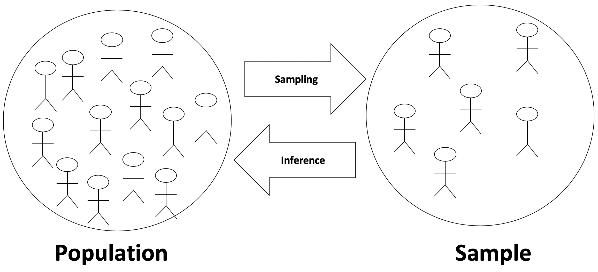
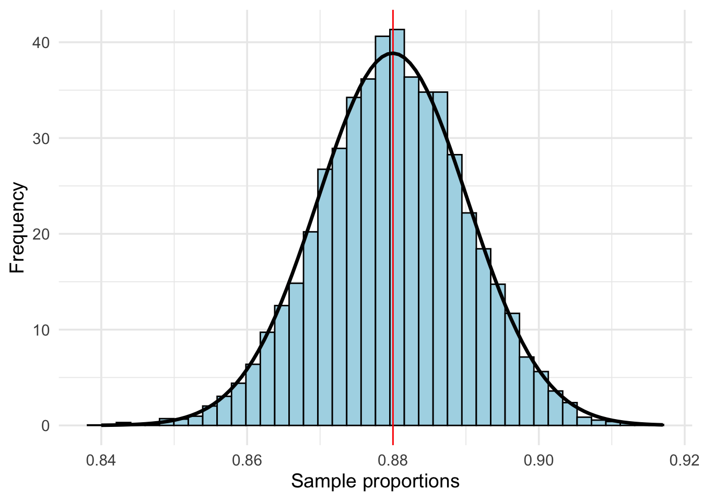

3.1 Point Estimates and Sampling Variability
3.1.1 Objectives
By the end of this unit, students will be able to:
- Understand the meaning of sampling distributions.
- Apply the central limit theorem to define the sampling distribution of a sample proportion.
- Identify the conditions needed for the central limit theorem to apply for sample proportions.
3.1.2 Overview
Basic Terms
- Sample proportion \(\hat{p} = \frac{x}{n}\)
- Sample proportion \(\hat{p}\) is the unbiased point estimator for the population proportion \(p\)
- A value of \(\hat{p}\) is a point estimate
- Error = \(\hat{p} - p\)
What is statistical inference?
Statistical inference is the process of making claims about a population based on information from a sample of data.
Typically, the data represent only a small portion of the larger group which you’d like to summarize. For example, you might be interested in how a drug treats diabetes. Your interest is in how the drug treats all people with diabetes, not just the few dozen people in your study.
At first glance, the logic of statistical inference seems to be backwards, but as you become more familiar with the steps in the process, the logic will make much more sense.

In this section we’ll begin investigating the true power of statistics – using sample data to make accurate claims about a population (even when we don’t have access to the entire population). We start by exploring the connection between a Population Distribution and the distribution of sample means, often called the Sampling Distribution. We’ll do this through a series of simple, interactive code blocks which you will run and use to answer questions.
Exploring the connection between population and sampling distributions
Start by viewing the following following video from the New York Times.
So the video claimed that the sampling distribution can help us answer questions about the population. This is really important because, as we mentioned in our first tutorial, Census is almost always impossible. Use the code blocks below to explore the connection between the population and the sampling distribution for various different populations. Note that you do not need to understand all of the code contained in the code blocks – you should focus, instead, on the pictures resulting each time you run the code. In general, you are invited to change the first few lines of code in each block, and you are not expected to look at the remaining code.
Sampling Distribution
Point Estimate error
Suppose a poll suggested the US President’s approval rating is 45%. We would consider 45% to be a point estimate of the approval rating we might see if we collected responses from the entire population. This entire-population response proportion is generally referred to as the parameter of interest. When the parameter is a proportion, it is often denoted by p, and we often refer to the sample proportion as \(\hat{p}\) (pronounced p - hat). Unless we collect responses from every individual in the population, p remains unknown, and we use \(\hat{p}\) as our estimate of p. The difference we observe from the poll versus the parameter is called the error in the estimate. Generally, the error consists of two aspects: sampling error and bias.
Sampling error, sometimes called sampling uncertainty, describes how much an estimate will tend to vary from one sample to the next. For instance, the estimate from one sample might be 1% too low while in another it may be 3% too high. Much of statistics, including much of this book, is focused on understanding and quantifying sampling error, and we will find it useful to consider a sample’s size to help us quantify this error; the sample size is often represented by the letter n.
Bias describes a systematic tendency to over- or under-estimate the true population value. For example, if we were taking a student poll asking about support for a new college stadium, we’d probably get a biased estimate of the stadium’s level of student support by wording the question as, Do you support your school by supporting funding for the new stadium? We try to minimize bias through thoughtful data collection procedures, which were discussed in Chapter 1 and are the topic of many other books.
Point Estimate for Proportion
A point estimate is the value of a statistic (based on a sample) that estimates the value of a population parameter.
Suppose we want to estimate the proportion of adult Americans who believe that immigration is a good thing for the U.S. It is unreasonable to expect that we could survey every adult American. Instead, we use a sample of adult Americans to arrive at an estimate of the proportion. We call this estimate a point estimate.
The sample proportion \(\hat{p}\)
We now study categorical data and draw inference on the proportion, or percentage, of the population with a specific characteristic.
If we call a given categorical characteristic in the population “success” then the sample proportion of successes, p, is:
\[\hat{p}= \frac{x}{n} \]
Where x is the number of individuals in the sample with a specified characteristic and n is the sample size.
Example 1: The Gallup Organization conducted a poll in which a simple random sample of 1,520 adults, living in all 50 U.S. states and the District of Columbia were asked the following question. “Thinking now about immigrants – that is, people who come from other countries to live here in the United States, in your view, do you think legal immigration is a good thing or a bad thing for this country today?” If 1135 responded “Yes”.
Obtain a point estimate for the proportion of Americans 18 and older who believe that immigration is good for the US.
Solution:
\[\hat{p}= \frac{1135}{1520} = 0.747\]
We estimate for the proportion of Americans 18 and older who believe that immigration is good for the US is 74.7%
Note: We agree to round proportions to three decimal places.
Sampling distribution of sample proportions \(\hat{p}\)
Central Limit Theorem (for Sampling Distribution of Sample Proportions)
When observations are independent (take random samples of fixed size \(n\) without replacement); the sample size \(n\) is large enough, i.e. \(np \geq 10\) and \(n(1-p) \geq 10\); and sample size \(n < 10\%\) of the population size then the sample proportion \(\hat{p}\) is approximately normal with mean = \(p\) and standard deviation = \(\sqrt{\frac{p(1-p)}{n}}\): \(\hat{p} \sim N(p, \sqrt{\frac{p(1-p)}{n}})\)
That is, \(z = \frac{\hat{p} - p}{\sqrt{\frac{p(1-p)}{n}}} \sim N(0, 1)\).
Notes:
The requirement that the sample size \(n < 10\%\) of population size is to have the standard deviation \(\sqrt{\frac{p(1-p)}{n}}\).
If the sample size \(n < 10\%\) of population size, then the \(\sqrt{\frac{p(1-p)}{n}}\) is overly estimated SD, and the SD will typically adjust by a factor \(\sqrt{\frac{N-n}{N-1}}\),i.e. \(\sqrt{\frac{N-n}{N-1}} \times \sqrt{\frac{p(1-p)}{n}}\).
When using \(\hat{p}\) to estimate \(p\), the Standard Error of \(\hat{p}\) is the standard deviation of its sampling distribution: \(S.E._{\hat{p}} = \sqrt{\frac{\hat{p}(1-\hat{p})}{n}}\)
When \(p\) is unknown, \(\hat{p}\) is used to replace \(p\) then check \(n\hat{p} \geq 10\) and \(n(1-\hat{p}) \geq 10\) (success and failure condition) estimated \(S.E. \approx \sqrt{\frac{\hat{p}(1-\hat{p})}{n}}\)
The Central Limit Theorem for proportions
The Central Limit Theorem for proportions states that if n is large enough, then:
\(\hat{p}\sim N \left( p, \sqrt{\frac{p(1-p)}{n}} \right)\)
Therefore, a different random sample of adult Americans might result in a different point estimate of the population proportion, such as \(\hat{p}= 0.71, \hat{p}= 0.78, \ldots\).
If the method used to select the sample of Americans was done appropriately, both point estimates would be good guesses of the population proportion. Due to variability in the sample proportion, we need to report a range (or interval) of values, including a measure of the likelihood that the interval includes the unknown population proportion.
3.1.3 Solved Problem
Suppose the proportion of American adults who support the expansion of solar energy is p = 0.88, which is our parameter of interest. Is a randomly selected American adult more or less likely to support the expansion of solar energy?
Answer: More likely.
Let’s see an example of sampling
Suppose that you don’t have access to the population of all American adults, which is a quite likely scenario. In order to estimate the proportion of American adults who support solar power expansion, you might sample from the population and use your sample proportion as the best guess for the unknown population proportion.
We will simulate a data to play the role of the population. As discusses above, we will assume that 88% of the population support the expansion and the remaining 12% don’t.
pop_size <- 250000000
possible_entries_solar <- c(rep("support", 0.88 * pop_size),
rep("not", 0.12 * pop_size))First we will sample, without replacement, 1000 American adults from the population, and record whether they support or not solar power expansion.
Second we will find the sample proportion.
## [1] 0.872Interesting thing about sampling from a population is that its always random. So the first sample might give a completely different sample proportion compared to the second sample, third sample and so on.
For example, we will perform the same sampling using the same code and we will obtain a different sample proportion.
sampled_entries <- sample(possible_entries_solar,
size = 1000, replace = F)
sum(sampled_entries == "support")/1000## [1] 0.872sampled_entries <- sample(possible_entries_solar,
size = 1000, replace = F)
sum(sampled_entries == "support")/1000## [1] 0.879Run the code to see that you obtain a different result everytime you perform sampling.
Third we will use the fact that the sample proportion changes with every sample and collect multiple samples and find the sample proportion for all of those samples. This will help us to create a distribution for the sample proportion to understand the spread, center and shape of the sample proportions.
library(tidyverse)
set.seed(123)
# Creating 10000 different sample proportions
phat <- rep(NA, 10000)
for(i in 1:10000){
sampled_entries <- sample(possible_entries_solar, size = 1000, replace = F)
phat[i] <- sum(sampled_entries == "support") / 1000
}
sampling <- tibble(phat = phat)
# Plot
ggplot(sampling, aes(x = phat)) +
geom_histogram(aes(y=..density..),bins = 40,col = "black", fill = "lightblue") +
geom_vline(xintercept = 0.88, col = "red")+
theme_minimal(base_size = 14) +
labs(x = "Sample proportions", y = "Frequency")+
stat_function(fun = dnorm, args = list(mean = mean(phat), sd = sd(phat)), size = 1.2)
This distribution of sample proportions is called a sampling distribution. We can characterize this sampling distribution as follows:
Center. The center of the distribution is \(\bar{x_{\hat{p}}}\) = 0.880, which is the same as the parameter. Notice that the simulation mimicked a simple random sample of the population, which is a straightforward sampling strategy that helps avoid sampling bias.
Spread. The standard deviation of the distribution is \(s_{\hat{p}}\) = 0.010. When we’re talking about a sampling distribution or the variability of a point estimate, we typically use the term standard error rather than standard deviation, and the notation \(SE_{\hat{p}}\) is used for the standard error associated with the sample proportion.
Shape. The distribution is symmetric and bell-shaped, and it resembles a normal distribution.
These findings are encouraging! When the population proportion is p = 0.88 and the sample size is n = 1000, the sample proportion ˆp tends to give a pretty good estimate of the population proportion. We also have the interesting observation that the histogram resembles a normal distribution.
3.1.4 Exercises
Exercise 1
In a random sample with size \(n=9000\), the count of “yes” is \(x=250\).
(a) Compute the sample proportion \(\hat{p} = \frac{x}{n}\).
(b) Compute the estimated standard error of the sample proportion \(S.E. \approx \sqrt{\frac{\hat{p}(1-\hat{p})}{n}}\).
Exercise 2
In a random sample of 765 adults in the U.S., 322 say they could not cover $600 unexpected expense without borrowing money or going to debt.
(a) What population is under consideration in the data set?
(b) What parameter is being estimated?
(c) Compute a point estimate for the parameter using the given information above?
(d) What is the estimated standard error?
Exercise 3
Of all freshmen at a large college, 19% made the dean’s list.
(a) What is the value of the interested parameter? State the sampling distribution of sample proportion for sample size 90.
(b) If a random sample of 90 freshmen selected 14 made the dean’s list. Compute the sample proportion and the Z-score.
(c) If a random sample of 90 freshmen selected 20 made the dean’s list. Compute the sample proportion and the Z-score.
(d) What is the probability that at most 14 of selected 90 freshmen made the dean’s list?
(e) What is the probability that between 14 to 20 students of selected 90 freshmen made the dean’s list?